Direct & Indirect Heating Solution
Fully automatic, instant steam generating range of boilers designed for safe and reliable operations. Easy to install and commission, these time-tested boilers require very little maintenance. It features a specially designed furnace and combustion system to burn difficult heavy oils and offers fuel flexibility between light and heavy oils to help respond to fluctuating fuel prices.
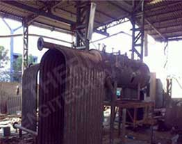
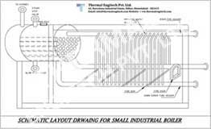
Thermal-Max Steam Boiler
Smoke tube type system boiler with three pass fully wet back design, suitable for cal / agro waste / oil / gas fuel.
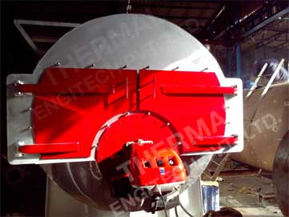
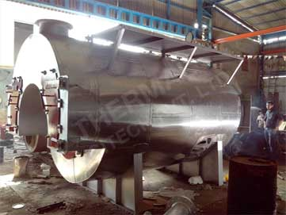
A unique design of the pre-furnace consists of lateral wall made of finned tube connected to the boiler body through headers.
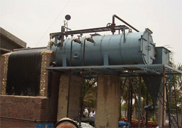
3-Pass Horizontal Design Thermic Fluid Heater has excellent fuel efficient Unit.
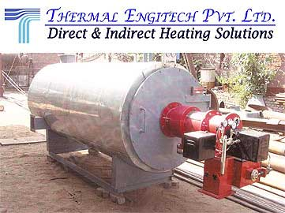
3-Pass Vertical Design Thermic Fluid Heater is a special design for Solid Fuel Fire.
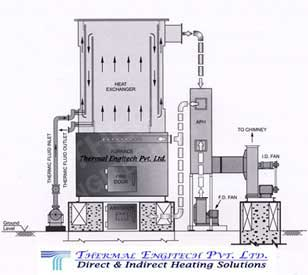
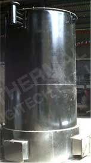
Vertical Four Pass Thermic Fluid Heater is combustion grate that gives you an assurance of the rated output on any solid fuels like coal, wood, lignite, husk, briquettes, pet coke, saw dust, bagasse, etc. without compromising on performance & efficiency. This reduces downtime leading to further increase in profitability.
Every solid fuel has different physical and chemical properties which influences the design and performance of the furnace in Thermal Fluid Heater. Different combustion systems are shown in above diagrams.
Low grade fuels are best handled using FBC technology to give good results. Thermal's unique design for efficient combustion suits different solid fuels like coal, lignite, wood, husk, pet coke, bagasse and biomass fuels resulting in to low operating cost, trouble free operation and lesser maintenance husk, agis best suited for some fuels with high ash content like low grade coal, paddy ro wastes etc.
FBC technology ensures complete combustion, helps homogeneous mixing of fuel, maintains uniform bed temperature and leaves low un-burnt fuel guaranteeing 5 to 7% higher efficiency than any other combustion system.Options of In-Bed Tubes in Furnace is also available to control bed temperature & system performance.
Fluidized Bed Combustion Technology is best suited for fuels like low grade coal, imported coal, paddy husk, petcock, etc with Auto feeding system of Over bed & Under bed into Furnace.
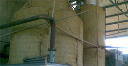
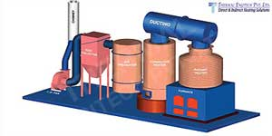
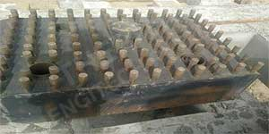
Industrial Hot Water Generators are vented systems provide temperatures up to 98°C. Pressurized systems are essentially closed loop required for indirect heating and provide temperatures up to 150°C without boiling or steam formation. The system is suitable to heat water up to 250°C with combustion of any solid fuels like wood, coal, bagasse, corn cobs, agrowaste, lignite, petcoke, etc. System is designed with all safeties & controls well defined for safe operation without lesser maintenance.
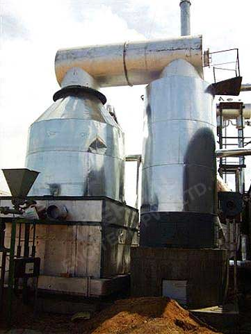
This is basically A heat transfer equipment to heat air prior to entering in the furnace with a primary object to increase thermal efficiency of hot flue gases are passed through the tubes and air outside the tubes. The heat of the boiler flue gas is recovered in APH to increase the air temperature & the thermal efficiency is increased. Another advantage is that the flue gas is sent to chimney stack at lower temperature allowing simplified design of ducting & flue gas stack. It also allow controls the temperature of flue gas leaving the stack to meet emissions regulation / pollution control.
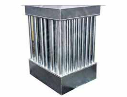
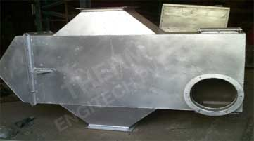
In spite of what some would like us to believe, dust collection cyclones are simple tanks with no moving parts and have been used for dust separation for over seventy years. They are made up of just a few parts, an air inlet, an outer cylinder, an air outlet, and cone with dust chute that connects to a collection bin with flex hose. Dirty air comes in through an inlet and spins quickly around. This spinning throws the heavier particles outward to the cyclone walls. Airflow on the cyclone walls is slowed by friction. Particles get trapped in the slower moving air then gravity pulls them down. As the air continues to spin it slows and drops downward. The cone on the bottom of the cyclone forces that slowing air to keep the particles pressed tightly to the walls. Those particles continue to slide downward and eventually exit out a dust chute into the collection bin. The dust chute is sealed tightly to the bottom of the cyclone with no air leaks to stir up the collected dust. At a certain place inside the cyclone called a neutral point, the spinning clean air reverses direction and comes up through the centre of the cyclone then exits through the cyclone outlet.
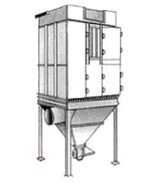
Our steam pressure reducing station are pre-fabricated manufactured ready to install units for steam system management. The pre-assembled steam pressure reducing stations are individually sized to meet end-user's specific needs. lnlet and outlet piping & valve are sized as per best engineering practices. Each unit is custom engineered and designed to meet specific system requirements.
All upstream & down stream pipe work & fittings are adequately sized to ensure that only the required pressure drop occurs across the control valve itself.